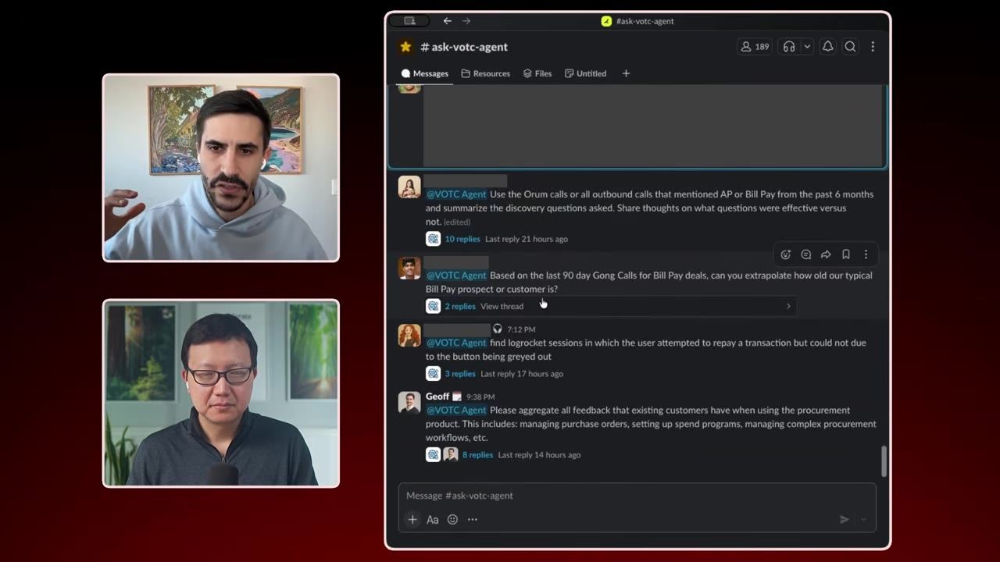
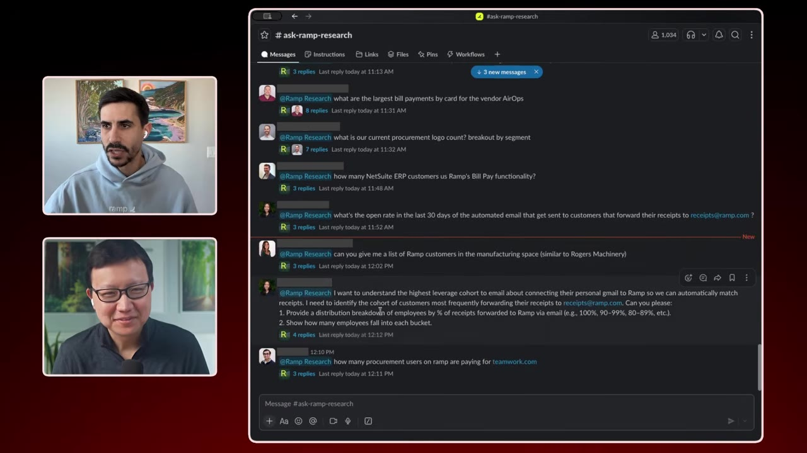
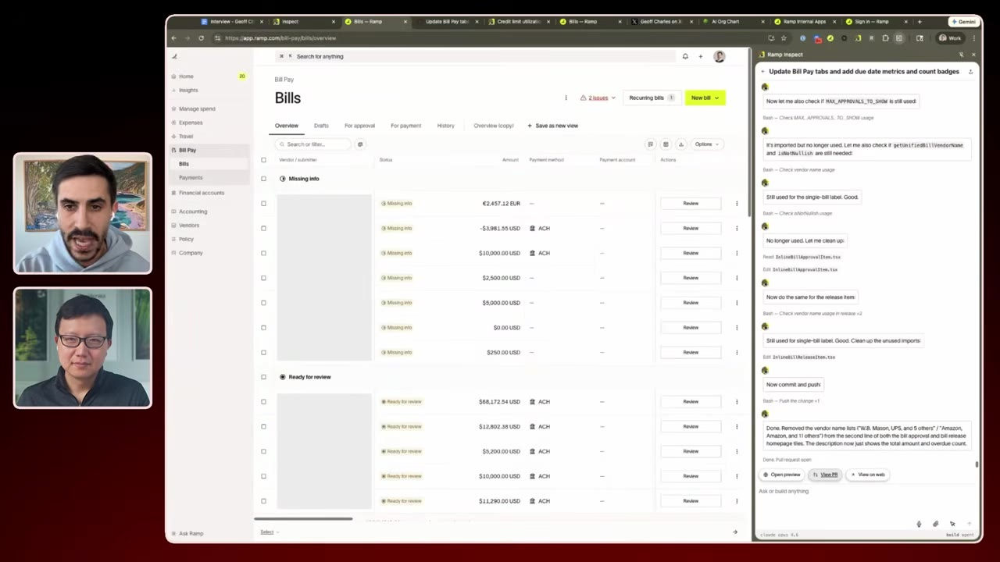

Ramp shipped 500+ features and passed $1B in revenue with ~25 PMs, and runs about as AI-native as any company outside the big labs. CPO Jeff walks through the actual agents, tools, and org changes behind that — a Voice-of-Customer agent, PMs shipping production code, and where he thinks the PM role goes next.
Watch on YouTubeRamp shipped 500+ features last year, passed $1B in revenue, and did it with ~25 PMs. Peter calls it one of the fastest-growing companies ever and the most AI-native he knows outside the big labs.
50% of Ramp's code is built by AI. That's 50% up from 30% in December. It'll probably be 80% by March.— Jeff, CPO of Ramp
PMs used to pride themselves on the perfect spec. Now the AI reads the spec, not an engineer. So the spec is just the output of a prompt, and its output is the product — prompt to product, back to prompt, back to product.
We don't really talk about the spec itself — that's just a step. We talk about the actual product. It's prompt to product, back to prompt, back to product.— Jeff
Ramp has 50,000+ customers and over a million end users, so the hard part is sifting the noise. The Voice-of-Customer agent — a job a person used to do by hand — reads Gong recordings, Salesforce notes, in-app surveys, support tickets, chats, and the Snowflake database, and answers any PM question about a persona's pain points and workflow gaps.

Making data easy to query got more people querying it, which made Ramp more data-centric as a company. Ramp Research understands the entire database and schemas and answers a question in about two minutes — open rate of automated emails, which customers are in Milwaukee, common use cases of a product. Sales, support, and marketers all use it. It's since moved to Snowflake CLI + Claude + custom skills.

The problem was making code less intimidating for a non-builder. Ramp built Inspect, a visual layer on top of any LLM, with the design component library baked in so it doesn't have to be taught what a metric or module looks like. It does front-end and back-end, not just a front-end prototype.

Feedback closes the loop. An escalation or a support ticket comes in; AI takes the first pass, figures out what happened and where in the codebase, opens the PR, and often ships it.
Jeff still tests the product, checks it against customer feedback, and calls metrics not good enough. But when he sees a bad result, the higher-leverage question isn't how to fix it — it's what broke down in the process. Which prompt failed, which skill, which design system? Fixing the output for one person is a one-time bandaid; fix the process and you never get that feedback again.
Planning runs on a 3-month horizon — "within 3 months you can do what you used to do in 3 years." It's mostly three things: aligning on strategy and trade-offs, getting commitment from teams, and giving sales a baseline of what's coming (one-pagers and slides auto-generated in Ramp's branding). Not a roadmap.
When code got automated, people concluded it was over for PMs. Jeff's take is the opposite: it's more over for the engineer — an engineer now manages hundreds of thousands of agents. The old PM training — stakeholder management, prioritization, communication, frameworks — is outdated, because code is free. The role splits two ways.
To move people up the ladder, Ramp removes the constraints — no limits on access, tokens, or budgets — sets the tools up well (MCPs, skills, an internal skills repository), runs public channels where people share what they built, plus office hours and designated experts to get people set up. AI proficiency is now a hard requirement to be hired; the product interview is build-a-product, walk me through why and how. And Ramp tracks per-person usage across Notion AI, ChatGPT, Claude Code, Claude Co-Worker, and Inspect to see who's pushing the bar and who needs a nudge.
Jeff isn't worried about cost. Token consumption per employee isn't close to double digits as a share of salary, and he argues it should be higher than your salary: if an agent does 10x your work, why wouldn't you pay it twice what you pay yourself? The investment in letting people discover is the competitive advantage — it's why Ramp raised money. What he's actually racing is the window before AI one-shots a whole platform like Ramp.
Management is probably dead… now is the time to be very, very proficient in this new technology. Optimize to be the best builder in the world.— Jeff